It is very important to learn how Unity's Scene View window works to correctly work with GameObjects.
The Scene View window is where you can see the objects that are part of the scene.
In this window, gizmos often appear. A gizmo is a graphic that helps the developer by providing information about the GameObject within the scene.
For example, if you select the light in the scene, you will see a gizmo indicating the direction of the light.
The coordinate system is what allows all GameObjects to be positioned in the scene.
Each GameObject will have coordinates that indicate its position.
Unity uses a Y-Up coordinate system:
x: horizontal axis
y: vertical axis
z: depth axis
Each game engine and 3D editor uses a different coordinate system.
Unity uses the Y-Up system.
Unreal and Blender use the Z-Up system where the vertical axis is z, and the depth axis is y.
In the top-right corner of the Scene View window, a very useful gizmo appears indicating the direction in which the scene is being viewed.
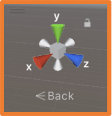
Clicking on the cones changes the view to align with that axis.
At the bottom of this gizmo, the current view is displayed, which can indicate "Persp" or any other direction such as "Back." If you click on the central cube or the icon below it with the current view, the view changes to an isometric one.
If you're developing a 3D game, the view will change constantly, but if you're developing a 2D game, the default view may not be correct and should be changed.
The following tools can be found at the top of the window.
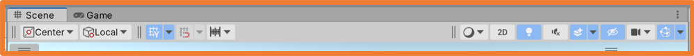
On the left:
The first two options control how the "hand" tool works.
The third toggles the grid display on or off.
The fourth allows GameObjects to "snap" to grid points when moved.
The fifth indicates the movement steps when moving a GameObject.
On the right:
The first indicates how the GameObjects in the scene will be viewed (solid, wireframe, etc.).
The second allows you to switch between a 3D or 2D (orthographic) view.
The third toggles the scene's lighting on or off.
The fourth toggles sound on or off.
The fifth toggles effects like sky, fog, etc.
The sixth shows/hides the number of hidden GameObjects in the scene.
The seventh allows camera configuration.
The eighth allows gizmo visibility configuration.
In the top-left corner, the following tools are available to navigate the scene and manipulate its GameObjects:
The above tools, which allow modifying a GameObject in the scene, will display a gizmo on the selected GameObject to assist in manipulation.
All GameObjects have a pivot point, from which any changes will be applied to the object.
The pivot point is located in the center of the GameObject by default, which is why the gizmo for the above tools is drawn from the center of the selected GameObject.
The pivot point cannot be moved.
Moving the Scene View Camera
With keys:
Arrow keys ⬅ ➡: moves the camera left and right.
Arrow keys ⬆ ⬇: zooms in and out.
With mouse:
With the hand tool selected, click and drag: moves the camera horizontally and vertically.
Middle mouse button (scroll wheel): same action as the previous line.
CTRL + ALT + left-click: same action as the previous line.
Right-click and hold: rotates the camera around its axis.
ALT + left-click: rotates the camera around the center point of the view.
All GameObjects can be moved/aligned with the view.
This is useful with cameras because it allows aligning the camera to the view so that when the game is run, the current view will be the one seen.
As mentioned earlier, if you're developing a 2D game, it's useful to change the scene view so that it matches the game view, where the z-axis is horizontal, and the y-axis is vertical.
Adding GameObjects to the Scene
To add GameObjects to the scene, you can right-click on the scene element area (hierarchy) or select the option from the GameObject menu.
The menu option also provides actions to perform on a GameObject if it is selected.
Depending on the type of project, different types of GameObjects will be available to add to the scene (packages can be added from the Package Manager to expand the catalog).
Empty GameObjects can be added, which serve to group other GameObjects, helping to keep the hierarchy organized.
There are also 3D objects, which will be the first ones used in class.
3D Project 3D Project with 2D Sprite Package
When adding a GameObject to the scene, you can rename it in the hierarchy (later, you can rename it by right-clicking on it in the hierarchy).
Additionally, when adding the GameObject, it is positioned at the center of the scene, regardless of the coordinates.
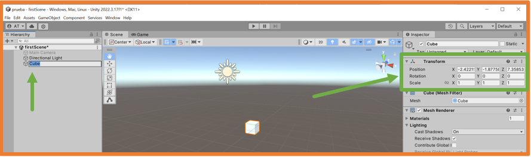
When selecting the GameObject in the inspector, you can see its components, including Transform, which indicates the values for position, rotation, and scale.
GameObjects are added to the hierarchy as children of the scene.
In the hierarchy, you can organize GameObjects within each other by dragging them onto the one that should contain them or dragging them out of the one that contains them.
If you right-click on an object in the hierarchy and add a GameObject, it will be added directly as a child of the selected one.
All modifications made to a GameObject affect all GameObjects contained within it in the hierarchy.
GameObject Pivot Point
All GameObjects have a pivot point located at their center.
The coordinates of this pivot point in the scene are what Unity uses to perform all necessary calculations.
The pivot point cannot be moved.
The pivot point is also the reference when one GameObject follows another, for example, a camera following a character. In this case, the camera will track the pivot point of the GameObject.
If you want a different tracking center, you can create an empty GameObject, add it to the main GameObject at the desired coordinates, and then set the camera to follow the empty GameObject.
Modifying GameObjects
To modify a GameObject, you must select it either by clicking on it in the hierarchy or by clicking on it in the scene view.
If you double-click a GameObject in the hierarchy, it will not only select the GameObject, but the view will also focus on it.
If you click on a GameObject in the scene view, it will both select the GameObject and center the view where you clicked.
All modifications made to a GameObject use the pivot point as the reference.
There are several ways to modify a GameObject in the scene:
Manually changing its values in the inspector
You can set the GameObject to be positioned at the origin coordinates (0,0,0).
This action can be problematic because the pivot point is centered by default. So when moved to (0,0,0), the GameObject might appear as in the image below, where half of it is below the point (0,0,0).
Using the inspector by hovering over one of the coordinates
The cursor will change, and you can click and drag to change the value.
With the tools mentioned earlier
You can modify a GameObject using the mouse.
When selected, a gizmo appears, and interacting with it using the mouse allows you to perform the required actions.
Each gizmo works differently.
Movement only along the X-axis
Movement along non-Y axes (X, Z plane):
When using tools with gizmos, you can use snaps.
The default step sizes or snaps can be changed:
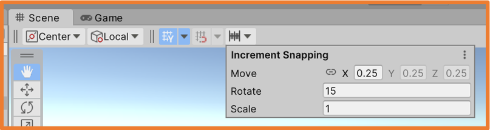
To apply snap modifications while using gizmos, hold down the control key.
All modifications use the pivot point as the reference.
You can make modifications by snapping the reference point to a vertex on the GameObject’s mesh. To do this, press the V key after selecting the tool.
When pressing the V key, you’ll see the gizmo move to the closest vertex as you hover over the GameObject with the mouse.
This action is known as vertex snap and allows you to align GameObjects by matching one of their vertices to a vertex of another GameObject.
Units of Measurement
By default, the units of measurement used in Unity are:
Distances: meters.
Sizes: meters.
Weight (mass): kilograms.
Time: seconds.
It's important to keep this in mind, as the behavior of GameObjects with physics depends on their size and weight.
Materials
Materials allow you to give appearance to the GameObjects.
To create a material, right-click in the file manager and select Create → Material. When created, you will be able to assign it a name.
It is important to remember that to maintain file organization, materials should be placed in a folder named Materials inside the Assets folder.
A material in the file manager is represented by a sphere, and depending on the settings applied in the inspector, it will have a different appearance.
With good configuration, you can achieve a realistic material.
Materials can also be obtained from the Unity Asset Store and from repositories on the internet.
You can apply a material to a GameObject in several ways:
Drag the material onto the GameObject in the hierarchy.
Drag the material onto the GameObject in the scene view.
Drag the material onto the GameObject in the inspector in the "Add Component" area.
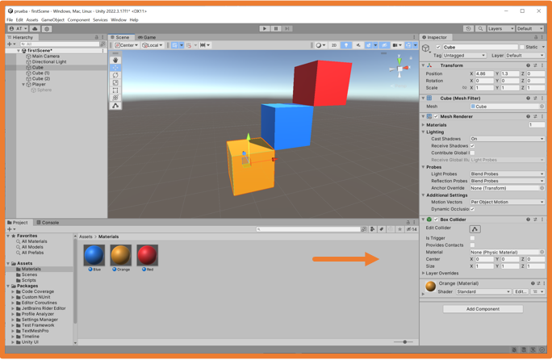
Physical Materials
Physical materials (Physic Material) allow control over how GameObjects physically interact when they collide with each other.
They are commonly used to make GameObjects bounce or to create friction between them.
To create a physical material, right-click in the file manager and choose the option Create → Physic Material.
Upon creation, you will need to give it a name.
The parameters that can be configured in a physical material are:
You can apply a physical material to a GameObject in several ways:
Drag the material onto the GameObject in the hierarchy.
Drag the material onto the GameObject in the scene view.
Drag the material onto the GameObject in the inspector in the "Add Component" area.
Activity 3: Building the Scene
Create a 3D project in Unity called SceneYourName.
Set the view camera as if developing a 2D game (Z-axis pointing backwards).
Add a plane to the scene and modify its size so that it is shallow but very wide (like a horizontal platform from left to right).
Add a cube, a sphere, a capsule, and a cylinder to the scene. Arrange them in the scene as you wish, but they should all be on the same Z coordinate as the plane.
Only one object should touch the surface of the plane.
Of the GameObjects not touching the plane’s surface, position one at the same Z coordinate as the one touching the surface, but with a slightly shifted X coordinate (still above the other), and the Y coordinate should be higher, at the top of the scene.
Create 5 materials with different colors and appearances, and assign each one to a GameObject.
Set the view to a different angle than the camera’s perspective—you can rotate and move it, but both the plane and all objects must appear in the view.
Take a screenshot of the scene view and name it YourNameUnity1.pngTake a screenshot of the game view when the game is running, name it YourNameUnity2.png. Compress the two screenshots into a rar or zip file named YourName and attach the compressed file to the assignment.
Activity 4: MonoBehaviour Events
Open the SceneYourName project.
Create a script called EventsScript and attach it to the GameObject that is touching the surface.
In the script, add instructions to display console messages with Debug.Log for the following events: Start, Update, OnMouseEnter (when the mouse is over the GameObject), and OnMouseDrag (when the GameObject is clicked and dragged with the mouse).
The messages should follow this format: "YourName (EventName): YourMessage".
Click on the script in the file manager so the code appears in the inspector, then run the game and take a screenshot showing both the console and the inspector (remember to activate the Collapse option in the console).
Name the screenshot YourNameUnity3.png.
Compress the screenshot into a rar or zip file named YourName and attach it to the assignment.
Activity 5: Gravity
Open the SceneYourName project.
One of the GameObjects is vertically aligned with the one that was touching the surface. Add a RigidBody component to the object at the top of the scene.
Run the game and observe what happens.
Change the weight of that GameObject and run the game again to observe the changes.
Change other RigidBody settings and run the game to see what happens.
Take a screenshot of the game window before the cube falls, and name it YourNameUnity4.png.
Take a screenshot of the game window when the cube hits the object below it, and name it YourNameUnity5.png.
Take a screenshot of the game window when the cube stops moving, and name it YourNameUnity6.png.
Compress the screenshots into a rar or zip file named YourName and attach them to the assignment.
GameObject Components
GameObjects can contain different components.
At a minimum, all GameObjects have the Transform component, which is used to indicate the position, rotation, and size of the GameObject.
Geometric GameObjects also have a Mesh and a Mesh Renderer to allow them to be drawn.
GameObjects that are visible in the cameras have a Collider to detect collisions.
Other components can be added to GameObjects from the Menu → GameObject or from the inspector using the "Add Component" button at the bottom.
Using the "Add Component" button opens a search bar where you can type the component you're looking for.
When developing a video game, it is often necessary for some GameObjects to be affected by physics (gravity, forces, etc.), for which they need to have a component called RigidBody.
In the configuration of RigidBody, the weight of the GameObject in the scene is specified, along with other parameters.
UI (User Interface)
The user interface (UI) consists of elements added to the scene to provide information to the user.
The user interface can be used to create menus and the HUD (Head-Up Display).
The user interface can be created with either 2D or 3D GameObjects, but 2D GameObjects are commonly used.
The user interface can include GameObjects such as text, images, sliders, scrollbars, buttons, or text fields.
UI GameObjects must be children of a Canvas GameObject.
When a UI GameObject is added to the scene, if there is no Canvas in the scene, one will be created to contain the UI GameObject.
UI - Text
There are two GameObjects for adding text to the scene:
Text: basic text with limited configuration options.
TextMeshPro: advanced text with many configuration options.
There are other MeshPro GameObjects that enhance the primitive types.
It is recommended to use MeshPro whenever available.
When adding a TextMeshPro for the first time to the project, a window will appear indicating that the necessary packages must be imported. Click on the "Import TMP Essentials" button.
It also indicates that example and extra packages can be imported.
To correctly display Canvas elements on the screen, some configuration changes must be made in the inspector.
Select "Render Mode" as "Screen Space - Camera" and then drag the camera from the hierarchy to the "Render Camera" box.
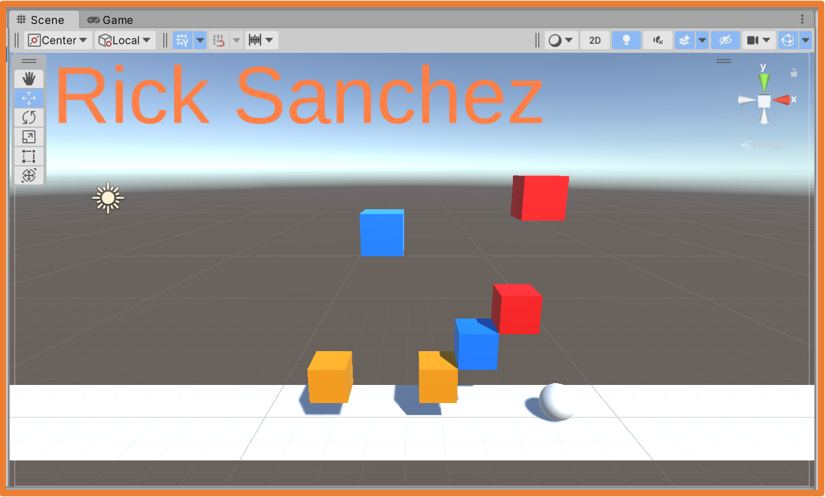
UI - Images
To add images to the user interface, the images must be sprites.
Sprites are bitmap images that contain a minimal unit of information, such as a button image or a character image.
An image may contain one or more sprites.
Each sprite can be added to the scene directly as an independent GameObject.
If an image contains multiple sprites, it optimizes image loading in the game.
Sprites can be used to form a complete character and animate each sprite independently.
They can also be used to create the animation of a character or object by changing the sprite of a GameObject as it moves.
An image with multiple sprites is also useful for containing different world or UI elements.
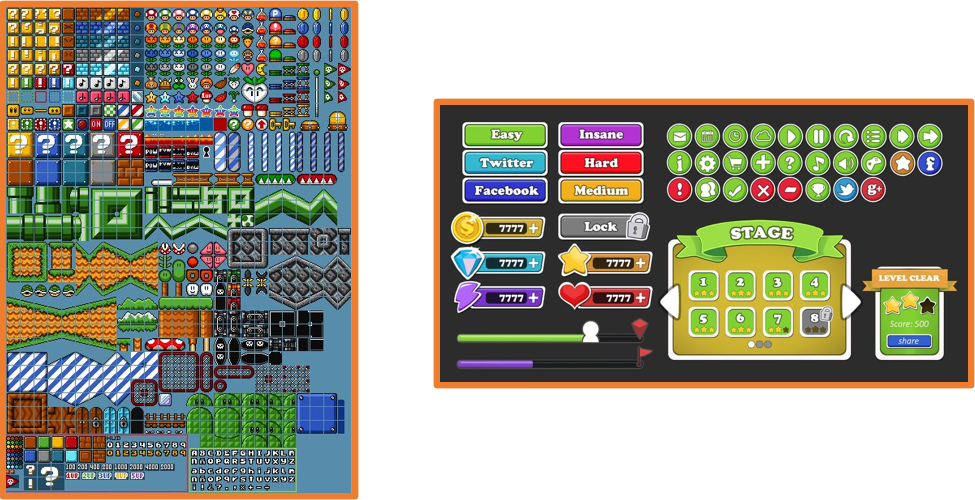
The first step to adding sprites to the Unity project is to add the 2D Sprite package from the Menu → Window → Package Manager.
This installs the Unity Sprite Editor tool.
The next step is to drag the images into the file manager into a folder called Sprites.
By selecting an image from the file manager, you can indicate its texture type in the inspector. To convert it into a sprite, select the Sprite (2D and UI) option.
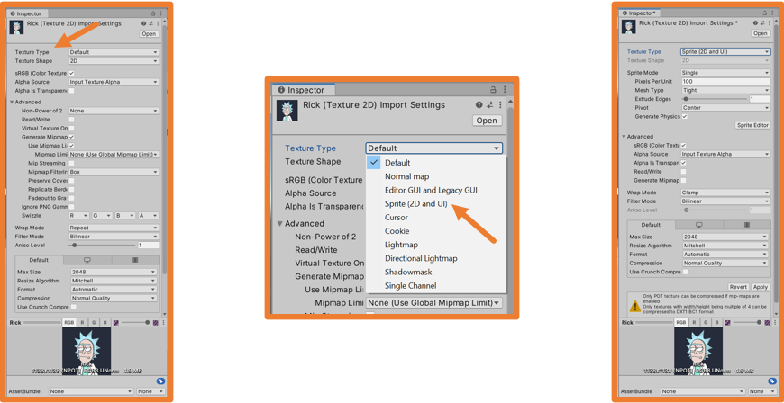
By doing this, the Sprite Editor button will become available. Clicking it will open the editor, allowing you to create the sprite from the image.
If the image contains only one sprite, with the default "Single" mode selected, opening the editor will automatically convert the image into a sprite.
Once an image is converted into a sprite, a small arrow will appear on it in the file manager.
The sprite editor allows you to modify the sprite.
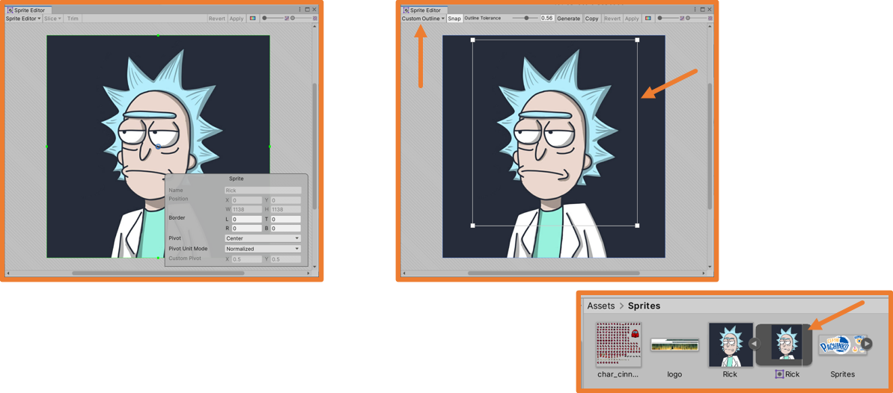
If an image contains multiple sprites, set the Sprite Mode option to Multiple in the inspector.
It's important that the background of the image is transparent for better results with the sprites.
This way, the sprite editor allows multiple sprites to be created from the image.
In the sprite editor, you can manually select the different sprites with the mouse. Once a sprite is selected, you need to name it for future reference:
Once a sprite is created, the Trim option adjusts the sprite to fit the content of the image (the background should be transparent).
You can change the way the sprite is selected if you want to better fit the image.
With Outline Tolerance, the outline can be adjusted to the image. Generate creates the outline, and Apply finalizes the sprite with that outline.
If the sprites are organized in the image in an orderly manner, in the editor's Slice dropdown, you can select how the image will be divided so the editor can automatically create the sprites:
Automatic: The editor detects the sprites based on the content.
Grid By Cell Size: The sprites in the image are organized in a grid, and this option requires specifying the size of each cell in the grid.
Grid By Cell Count: The sprites in the image are organized in a grid, and this option requires specifying the number of rows and columns.
After selecting the desired option, click the Slice button to generate all the sprites.
If the image contains sprites for character animations, like in the example, when using the options in the Slice button, you must consider the content of the image to ensure the pivot is correct for the animation to work properly.
In most cases, the sprites are arranged in a grid, and the pivot is in the center, although this may vary between sprite sheets.
Once the sprites are created, clicking the arrow on the image in the file manager will display all the sprites along with their names.
Once an image is converted into one or more sprites, you can drag one of the sprites into the hierarchy or scene view to add a GameObject displaying that sprite.
You can also add a UI → Image GameObject and assign the sprite by dragging it to the Source Image field.
Prefabs
A Prefab is a GameObject with all its characteristics (size, rotation, scale, material, textures, physics, etc.) stored as an asset.
Once a GameObject is saved as a prefab, it can be instantiated from a script.
A typical example of a prefab in a game would be objects dropped by enemies when they disappear after being hit.
Prefabs are also easy to export for use in other projects.
To create a prefab, drag the object from the hierarchy to the file manager.
For better organization, all prefabs should be placed in a folder called Prefabs.
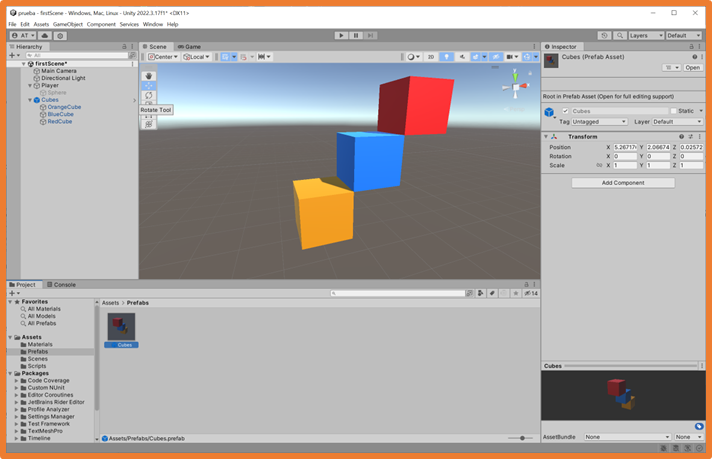
In the hierarchy, it is indicated that the GameObject originates from a prefab by displaying its name in blue.
A preview of the prefab appears in the file manager.
When selecting the prefab in the inspector, you can view its characteristics and components.
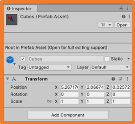
A GameObject in the hierarchy that comes from a prefab can be edited in the current scene without affecting the prefab itself.
To edit a prefab, double-click on it in the file manager.
Changes to the prefab will be replicated in all GameObjects in the project that were created from the prefab.
You can add as many copies of a prefab to a scene as needed.
From a script, you can also add GameObjects that are prefabs.
Activity 6. Images and Prefabs
Open the project EscenaTuNombre.
Add a Cube GameObject, create a new material for it, and assign it.
Create 5 copies of this cube and arrange them into a figure however you'd like (you can rotate and scale them).
Create an empty GameObject and add the 6 cubes that form the figure, being careful with the coordinates.
Create a Prefab from this empty GameObject.
Add text to the scene with your name.
Add a passport-style photo of yourself to the scene (current).
Take a screenshot of the entire Unity window during execution, showing the prefab in the file manager, and the GameObjects in the scene in the scene view. Name it TuNombreUnity7.png.
Compress the screenshot into a rar or zip file named TuNombre and attach the compressed file to the assignment.
The GameObject Class
Accessing GameObject Properties
From a script added to a GameObject, you can access the properties of the GameObject itself and all the components added to it.
To access this information, you use the gameObject variable, which is directly injected when inheriting from the MonoBehaviour class.
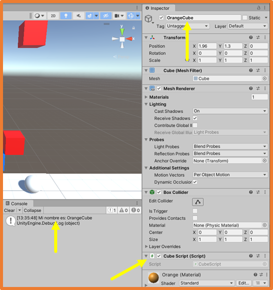 Changing the name property through code
All GameObjects have at least one Transform component, which indicates the position, rotation, and size of the GameObject.
Since it is a component present in all GameObjects, Unity directly injects the transform property, which can be used directly, or accessed through the gameObject property.
To access a component other than Transform, you need to create a property to store that component using the GetComponent method, allowing you to access it.
For example, to access the Collider component:
Disabling the collider during execution
Accessing Other GameObjects
To access other GameObjects from a script, you declare a GameObject property and then assign the desired GameObject to it (e.g., SphereGO → GameObject).
There are several ways to assign the GameObject to the property:
If the property is public, you can drag and drop the GameObject from the hierarchy to the variable in the Inspector.
From the script itself, using the Find method of the GameObject class to search by name (in these cases, the property is usually private).
Searching for GameObjects with that tag and filling the array during execution
Assign tags to GameObjects and use the FindGameObjectsWithTag method of the GameObject class to search by tag.
In this case, the variable should be declared as an array because there could be more than one GameObject with that tag (the property is usually private).
Filling the array with GameObjects with that tag during execution
When accessing other GameObjects, you can access their properties. For example, the following script, added to the MainCamera, would access the Text property of a GameObject of type TextMeshPro and modify its value.
To access the GameObject, you must drag it to the appropriate slot in the Inspector after selecting the MainCamera.
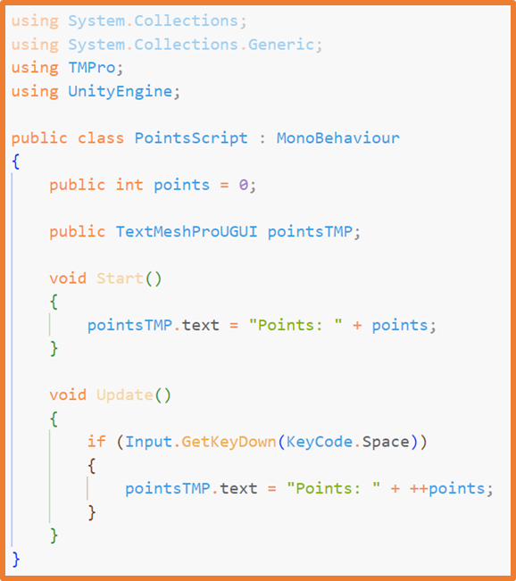
Accessing Components of Other GameObjects
Once you have a reference to another GameObject using any of the techniques mentioned earlier, you can access the components of that GameObject using the GetComponent method, just as you would access components of the current GameObject.
If the property to access the component is declared as public, when you drag the GameObject to the slot in the Inspector, the specified component type will be automatically assigned to the property.
You can access scripts on other GameObjects by referencing the target GameObject and specifying the script name.
You can use any of the techniques mentioned earlier to obtain the reference to the other GameObject.
The Transform Component
The Transform component is structured into three elements:
Position
Rotation
Scale
Each element specifies a value for each coordinate, which can be accessed as shown earlier.
To modify position, rotation, and scale,
you use objects of the Vector3 class.
The code in the image represents the coordinates: x=3, y=8, z=1.
The accepted parameters are decimal numbers (float), although integers can also be used.
If you indicate a decimal number, you must add the letter "f" at the end:
Changing a GameObject's Position
To change the position of a GameObject:
Assign a new Vector3 to the position property of its Transform:
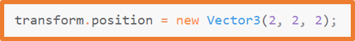
Perform operations on the position property of the Transform using a Vector3:
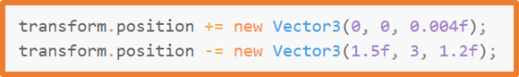
Use the Translate method on the Transform:
With Translate, you can specify whether to use the object's own transform (default) or the world origin (0, 0, 0):
Additionally, the Vector3 class includes some properties that return Vector3 objects aligned with the unit axes:
Assign a new Vector3 to the rotation property of its Transform
using the Euler method of the Quaternion class:
Use the eulerAngles property (similar behavior to the method above):
Use the Rotate method on the Transform.
With Rotate, you can specify whether to use the object's own transform (default) or the world origin (0, 0, 0).
Rotating Around Another Object
With the RotateAround(origin, axis, speed) method, you can make a GameObject rotate around another:
Using the LookAt(transformOtherGameObject) method, you can make a GameObject always face another GameObject:
These two techniques should be used within the script's Update method.
Scaling a GameObject
To scale a GameObject, it only makes sense to scale it relative to its pivot point.
For this reason, you use the localScale property:
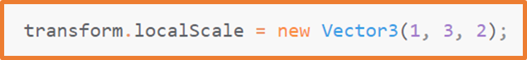
The Transform Component in the Hierarchy
When GameObjects are grouped, the Transform component allows access to all the Transforms and GameObjects in the group.
The access order of child GameObjects is the same as the order in which they appear in the hierarchy.
You can also access the parent from a grouped GameObject.
Movement Using the Update and FixedUpdate Methods
Update Method
The Update method runs once per frame.
When a modification is applied to the Transform component of a GameObject in the Update method, movement occurs, for example:
adding 0.01 units to the x position in each Update.
Moving the GameObject
The problem with using the Update method is that the number of FPS generated depends on many factors,
from the capabilities of the computer running the game to the number of elements displayed at any given moment.
For this reason, it is not advisable to move objects directly in this way.
There are two ways to solve this problem:
The Time class and its deltaTime method.
If you multiply a movement by Time.deltaTime, the movement will be consistent regardless of the frame rate at any given time.
Time.deltaTime returns the value 0.02 (corresponding to 20 milliseconds).
(This technique was used until the introduction of the next method).
The FixedUpdate method of the MonoBehaviour class.
It runs at regular intervals of 20 ms (50 times per second).
It is also common to create a float property called speed to use as a multiplier to control the speed.
Move an object along the x-axis based on the value of the speed property from the Update method.
FixedUpdate Method
By default, the FixedUpdate method runs every 20 ms, but this behavior can be adjusted from Menu → Edit → Project Settings… under the Time section.
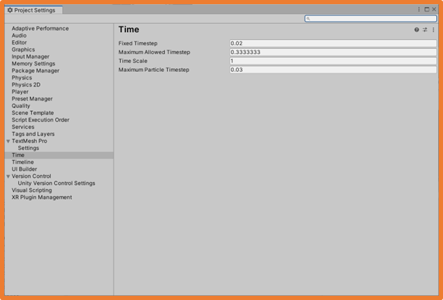
Move an object along the x-axis based on the value of the speed property from the FixedUpdate method.
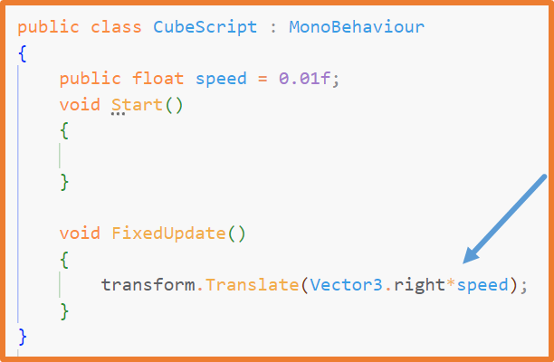
Both methods, Update and FixedUpdate, can achieve the same result if multiplied by the same value.
speed * Time.deltaTime speed
The advantage of FixedUpdate is that it can be configured from the project settings.
The Input Class
With the Input class, input events from the user’s device (keyboard, mouse, gamepad, etc.) can be captured.
The Input class unifies all available input devices into a single point of control.
Unity provides a tool to configure input devices.
In many games, users are also allowed to change this configuration for a personalized experience.
From the Menu → Edit → Project Settings…,
the project settings open, and in the Input Manager section, input devices can be viewed and configured:
The MonoBehaviour class provides some methods that allow code execution when mouse events occur:
OnMouseDown
OnMouseDrag
OnMouseEnter
OnMouseExit
OnMouseOver
OnMouseUp
OnMouseUpAsButton
The Input class has a series of methods that return a boolean value when the user interacts with a key,
mouse button, or a virtual button like "Fire1".
These methods are typically used inside the script's Update method, as it runs much more frequently than other methods.
The Input class also has methods to capture movement axis values.
These methods return a float decimal value. When the axis is at rest, the value is 0, and when pressed, it returns a value between -1 and 1, depending on acceleration (duration of key press or joystick movement range).
There are axes:
Horizontal and Vertical: w, a, s, d, arrows, joystick, d-pad.
Input.GetAxis("Horizontal")
Input.GetAxis("Vertical")
Mouse X and Mouse Y: assigned to mouse movement.
Input.GetAxis("Mouse X")
Input.GetAxis("Mouse Y")
Movement Using the Input Class
Thanks to the Input class, GameObjects can be moved when the user interacts with the input devices.
In the code, with the camera oriented as indicated by the gizmo:
up arrow or w → move forward (away from the camera).
down arrow or s → move backward (toward the camera).
left arrow or a → move left.
right arrow or d → move right.
up arrow or w → move forward.
down arrow or s → move backward.
left arrow or a → rotate left.
right arrow or d → rotate right.
With either of the two codes above, if the camera is positioned behind the GameObject in the same x-orientation and is added as a child of the GameObject,
the camera will follow the GameObject as it moves.
Activity 7. Modifying GameObjects via Inputs
Create a 3D project in Unity called InputsYourName.
Set the camera view as if a 2D game is being developed (z-axis facing backward).
Add a plane to the scene and modify its size to be 15x15x15, positioned at coordinates (0, 0, 0).
Add a Capsule GameObject and place it at coordinates (0, 1, 0).
Add a Cube GameObject and place it at coordinates (3, 0.5, 0).
Add a Sphere GameObject and place it at coordinates (6, 0.5, 0).
Create an orange material and assign it to the Capsule GameObject.
Create a blue material and assign it to the Cube.
Create a green material and assign it to the Sphere.
Duplicate the Cube and move them across the plane (you can make about 20 copies).
Create a script for the capsule and add the necessary code to perform the following actions:
Pressing the Horizontal and Vertical axes should move the capsule across the plane.
Pressing the E key should scale the sphere up by 0.5 on all axes.
Pressing the Q key should scale the sphere down by -0.5 on all axes. Ensure that the sphere never scales smaller than 0.5.
Create a script for the camera and add code to make it always face the capsule.
Kinematic and Physical Movement
Types of movement in Unity:
Kinematic:
Movement applied directly to the GameObject's transform component.
These movements are independent of the game's physics (gravity, acceleration, impulses, inertia, friction…).
Physical:
Movements that use the game’s physics engine.
The GameObject must have the Rigidbody component.
When adding the Rigidbody component to a GameObject, its configuration can be seen in the inspector.
Properties of Rigidbody:
Mass: the object's weight in kilograms.
Drag: resistance to linear movement.
Angular Drag: resistance to rotations.
Use Gravity: indicates whether it is affected by gravity.
Is Kinematic: if enabled, the GameObject will not be affected by the physics engine.
It is often enabled to detect collisions. (It can only be manipulated using its Transform).
Constraints: allows locking coordinates.
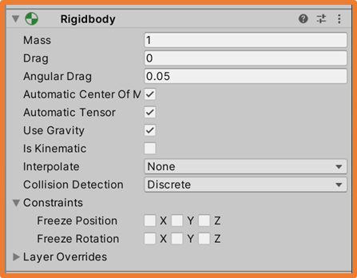
With kinematic movements (without physics), when moving a GameObject, what happens is that the GameObject is teleported to the new position.
When a GameObject has the Rigidbody component, it is not recommended to modify its position using its Transform, as teleporting to the new position could cause it to partially appear inside another object, causing unwanted collisions.
To move a GameObject with a Rigidbody, forces need to be applied to push the GameObject in a direction.
If the forces are applied without interaction with Input, the FixedUpdate method is used.
If the forces are applied with Input interaction, the Update method is used.
Physical Movement
Example of physical movement:
With the above code, care must be taken with the physical materials of the GameObjects as friction can cause the GameObject not to behave as expected.
The floor provides friction, and when pushing the GameObject, it tips forward.
Additionally, due to friction, when applying forces, the GameObject takes some time to move, and when stopping the force, it slows down gradually.
To solve these problems, you can choose one of the following options:
Create Physical Materials for more realism.
These physical materials should be properly configured and assigned to GameObjects that affect movement, such as surfaces or characters.
Add Constraints to the Rigidbody component to lock position and/or rotation on any of the three axes.
As mentioned, to apply forces, you need a Rigidbody property in the code.
Some of the methods that can be used are:
AddForce: applies push forces in world coordinates.
AddTorque: applies rotational forces in world coordinates.
AddRelativeForce: applies push forces in local coordinates.
AddRelativeTorque: applies rotational forces in local coordinates.
AddForceAtPosition: applies push forces at a specific position.
AddExplosionForce: simulates explosions.
These methods have a version that, in addition to receiving a Vector3, can also specify the type of force to apply using the following properties:
ForceMode.Force: depends on the object. Force = mass * acceleration.
ForceMode.Acceleration: acceleration, ignoring the GameObject's mass.
ForceMode.Impulse: applies the force instantly in one frame (used in Update).
ForceMode.VelocityChange: directly applies a velocity.
By using only physical movements, inertia of movements can be maintained on any axis.
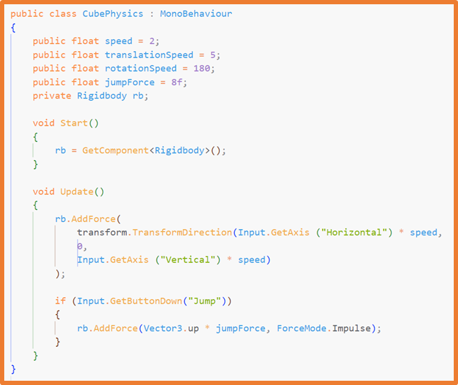
Combining Kinematic and Physical Movements
Although not recommended, both types of movement can be combined:
Kinematic: move the character/enemies along surfaces.
Physical: apply upward force to make the character jump.
The problem with this code is that if the character stops moving mid-jump, it won't retain its jump inertia.
Activity 8. Rigidbody and Camera Tracking
Open the project InputsYourName.
Add the Rigidbody component to the capsule.
Configure the Rigidbody constraints for the capsule so it doesn’t tip over when colliding.
When programming the capsule's movement, there were two options: one that rotated with the a and d keys and one that didn’t.
If you used the non-rotating option, change the code to use the rotating option.
Add the Rigidbody component to the sphere.
Disable the camera script.
Position the view behind the capsule as shown in the image (z-axis pointing backward).
Select the camera and choose the option Menu → GameObject → Align With View.
Make the camera a child of the capsule.
Run the game and move the capsule to observe that the camera now follows the capsule and that the capsule collides with other GameObjects thanks to the Rigidbody.
Collisions
To detect collisions between GameObjects, they must have a Collider component
(usually present on all GameObjects).
Unity offers two mechanisms to detect collisions between GameObjects:
Via Collider.
Via Trigger (Collider marked as Is Trigger, generally used for GameObjects without a graphical representation on screen).
It is common to use the GameObject's name or Tag to detect collisions.
Collisions with Collider
Collider collisions are used when one GameObject touches another.
For example:
The player pushes another GameObject.
A GameObject impacts another GameObject, such as a shot.
…
Colliders can be 3D or 2D, and thus the MonoBehaviour class offers methods that will be triggered when a collision between colliders is detected.
3D Versions:
void OnCollisionEnter(Collision collision): triggers on the frame the collision starts.
void OnCollisionStay(Collision collision): active while the collision persists.
void OnCollisionExit(Collision collision): triggers on the frame the collision ends.
2D Versions:
void OnCollisionEnter2D(Collision collision)
void OnCollisionStay2D(Collision collision)
void OnCollisionExit2D(Collision collision)
In the methods, a Collision object is received, allowing access to all aspects of the collision and the other GameObject.
Actions can be executed upon colliding with other GameObjects.
Through the collision object, you can access all elements of the GameObject involved in the collision.
Collisions with Trigger
Trigger collisions are used to determine if a GameObject is in a specific zone.
For example:
A GameObject has a collider larger than its size to detect if the player is within range so that when a key is pressed, it can be collected (consumable) or activated (switch).
An empty GameObject has a collider to detect if the player is inside it.
…
To act as a Trigger, a GameObject must have the Is Trigger option checked in the Inspector within the Collider component.
Sometimes GameObjects that act as Triggers only have the Transform and Collider components, as they don't need to be visible on screen.
If a collider is set as Is Trigger, the MonoBehaviour class offers the following methods:
3D Versions:
void OnTriggerEnter(Collider other): triggers on the frame the collision starts.
void OnTriggerStay(Collider other): active while the collision persists.
void OnTriggerExit(Collider other): triggers on the frame the collision ends.
2D Versions:
void OnTriggerEnter2D(Collider other)
void OnTriggerStay2D(Collider other)
void OnTriggerExit2D(Collider other)
In these cases, the other object is received in the methods as a Collider object, which is the Collider of the other GameObject involved.
For the GameObject that moves:
For the GameObject set as is Trigger:
In the following example, an invisible GameObject with a Collider applies a force to make another GameObject float inside it,
provided the other GameObject has a Rigidbody component:
Interesting Methods
Destroy Method
The Destroy method removes the GameObject. If no time is specified, it will be removed immediately. If time is specified, it will be removed after those seconds have passed.
Instantiate Method
The Instantiate method allows creating GameObjects during runtime.
Examples of usage:
When the player shoots, the projectile should be created at that point and move in the direction they are aiming.
In a zone of the scene, an enemy appears at the top, falls, and disappears when it reaches the bottom
(loop with Instantiate, movement, detection by trigger upon reaching the bottom, and Destroy).
An object is created when the "Fire1" button (left mouse button) is pressed.
When the player touches the GameObject, it replicates itself 10 times.
An object is created at fixed time intervals without any action required.
A force is applied to the created GameObject at the moment of creation, launching it forward.
Generating GameObject Generated GameObject
Utilities
With the Invoke and InvokeRepeating methods, you can specify the waiting time before calling another method.
Active invocations can be canceled with the CancelInvoke method.
If no parameter is provided, all invocations will be canceled. If a method name is passed as a parameter, that specific invocation will be canceled.
Another way to perform tasks similar to InvokeRepeating is through the use of Coroutines.
Coroutines can be canceled using the methods StopAllCoroutines and StopCoroutine("MethodName").
Practice 6 – Pachinko
A Pachinko is a Japanese arcade machine in which the player has a large number of steel balls that are introduced into the machine.
The pachinko machine has a system that launches the balls from below through a side to reach the top, from where they begin to fall.
On the board, there are a series of pins where the metallic balls bounce, taking random paths.
Additionally, on the board, there can be different gates through which the balls can fall to earn points, and sometimes gates that return the ball to the player for reuse.
Lastly, the balls that reach the bottom do not award prizes.
Below, you can see some real examples and video game versions.
Create a 3D project in Unity called PachinkoYourName.
Install the Unity package that is attached
to the task in one of the following ways:
Double-clicking the package file will open the dialog to import all elements of the package.
Dragging the package file will open the dialog to import all elements of the package.
The package includes, besides the board, an image with sprites and
a series of materials that you can apply to the board and the metal balls.
All elements of the board include a Collider to prevent balls from passing through them. Additionally, a Collider
is included in front to prevent balls from being shot forward (leaving space for the metallic balls).
First, you should create the following prefabs (pay attention to the scale of the elements to avoid collision issues):
A metallic ball with physics and collisions.
A static pin (it could be a cylinder) with metallic material and physical material for the balls to bounce off.
A rotating pin (it could be a cylinder with an elongated cube or two elongated cubes forming a cross, or anything else you can think of)
that won't have a bouncing material. When the ball hits this pin, it should rotate around its center.
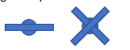
A gate that awards 5 points if the ball falls into it.
A gate that awards 10 points if a ball falls into it. This gate should be smaller than the previous one.
A gate that grants an extra ball if the ball falls into it.
The gate prefabs should have sprites included to indicate to the player what happens when the ball falls into them.
In the scene, you should add:
At the top center, a current passport-like photo of yourself, your name, the current points, and the number of remaining balls should be displayed.
As many static and rotating pins as you want to make the game look dynamic.
Two 5-point gates.
One 10-point gate.
Two extra ball gates.
Game Mechanics:
The game will start with 100 balls and 0 points.
Pressing the left arrow key will release a ball from the top left slot, and one ball will be deducted from the remaining count.
Pressing the right arrow key will release a ball from the top right slot, and one ball will be deducted from the remaining count.
When a ball falls into any gate, the corresponding points or an extra ball should be added to the remaining count.
When a ball falls into any gate or the bottom, it should be destroyed.
The HUD should always be updated with the current points and the remaining number of balls.
All GameObjects in the scene should have appropriate names.
Create and assign all the necessary tags.
Create the necessary scripts and add them to the GameObjects or Prefabs for the game to work correctly.
Extras:
Each time a ball is created, it will have a random material from all the metallic ball materials included in the package.
Create a gate prefab that rewards the player with 50 extra balls. This should be a gate that's difficult for a ball to fall into.
Once created, add the gate to the board.
Modify the board to resemble the original pachinko machines, where the ball is launched from the bottom through the side toward the top of the board.
In this case, the arrow keys will be replaced by the spacebar, and pressing it will launch a ball.
You should create a mechanism to adjust the force of the ball, such as a wheel that rotates with the arrow keys to indicate power.
CharacterController Component
In many first- or third-person games, physics is needed to control certain collisions, such as ensuring the character doesn't pass through the floor or walls.
Additionally, in these games, the movement is intentionally unrealistic, allowing the character to start moving or change direction instantly, without being affected by inertia.
For these cases, Unity offers the CharacterController class, which has its own functions, is affected by collisions, and doesn't require a Rigidbody, making it easier to use.
When adding the CharacterController component to a GameObject, a capsule-shaped collider is automatically added to the GameObject and is associated with the CharacterController component.
Empty GameObject Composite GameObjects
All GameObjects that are graphically represented in the scene have a Collider component. It may be useful to remove or disable it if the capsule-shaped collider from the CharacterController is sufficient.
The properties of the CharacterController component are as follows:
Slope Limit: the character can climb slopes up to the specified degree.
Step Offset: the character can climb steps up to 0.3 meters high.
Skin Width: the collider's skin width (margin where collisions don't apply).
Min Move Distance: the minimum value for the character to move.
Center: the position of the collider relative to the GameObject.
Radius: the capsule's radius.
Height: the capsule's height.
Since CharacterController is not affected by physics,
the component provides several properties and methods to gather information about the
GameObject, such as the isGrounded property, which indicates if the character
touched the ground during its last movement.
The ground will be any other GameObject with a collider that the CharacterController can stand on.
To move the character, two methods are available:
Move: allows full control of the character's movement, including gravity, jumping, horizontal movement, etc.
SimpleMove: moves the character while automatically applying gravity.
The technique used with the Move method involves gathering data from Input and other GameObjects in the scene that affect movement and using them to calculate the movement vector to be applied to the character.
Some data that should be gathered include:
Is the character touching the ground?
Is any key or button being pressed?
Should an upward force be applied because the character is jumping?
…
An initial approach for character movement using CharacterController, where the character can move on a surface, could be the following:
The properties are public so their values can be checked in the Inspector when the script is executed.
This approach is very basic since it doesn't account for the camera, gravity, or other important factors.
Additionally, when moving diagonally, the two forces add up, making the movement faster, which doesn't make sense.
Character Control with CharacterController
Below is a series of scripts for:
Full player movement, including jumping and sliding on steep slopes.
Camera following the player.
Being able to push GameObjects affected by physics (with Rigidbody).
These scripts are based on Unity tutorials and can be improved in various ways.
When implementing character movement, the choice is between:
Implementing movement using physics with Rigidbody.
Using physics makes the movement more realistic, which can be an added value in simulators.
Player control will be more challenging.
Implementing movement using kinematics with CharacterController.
Using CharacterController provides easier use for developers,
precise control of collisions, and overall more efficiency as it is optimized for characters.
Additionally, the player will have more precise control, which is very useful for performing complex actions.
In most cases, implementing with CharacterController is sufficient.
Professional Camera
Unity offers a package called Cinemachine which provides tools and
virtual cameras that simulate a film studio, allowing full control of the camera.
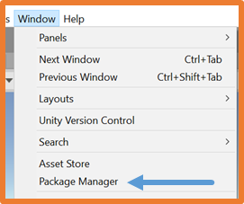
Once the package is installed, you can find the virtual camera settings in the Menu ⇒ Component ⇒ Cinemachine,
which can be added to the camera in the scene.
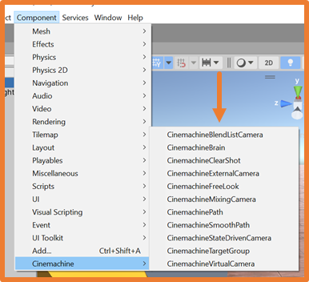
Programmed Movement
In a video game, there may be elements that have pre-programmed movement,
for example, an enemy that moves from side to side along the same path, or a platform that moves from one point to another.
In these cases, the mechanics are always the same:
Create an empty GameObject.
Add the GameObject that will move (enemy, platform…) to that empty GameObject.
Add as many empty GameObjects as there are points the moving object must reach.
In a script added to the object that will move, indicate the point-to-point movement.
The previous setup would look like this if the platform only needs to move between two points:
Add a script to the GameObject that needs to move with the following code:
This code uses kinematic movement to move the platform from one place to another.
The code can be improved by creating an array of destination positions,
allowing the GameObject to move through all positions repeatedly.
You can also specify that the GameObject pauses when it reaches a destination.
If you add a RigidBody to the platform (without using gravity and set as kinematic),
the player or any other GameObject can stand on the platform and move with it.
When the platform has a Rigidbody, the movement should be done using physics.
In this case, the script should be placed on the parent GameObject of the platform.
This code should be added to the parent GameObject of the moving platform.
Additionally, you should drag the platform and the points it should pass through into the inspector.
Since the platform has a Rigidbody, the movement must be physical.
If the character's movement has been implemented using the CharacterController component,
and the previous example is used to move a platform, the character will not stay on the platform.
This happens because the platform has a Rigidbody and moves with physics, but the character doesn't have a Rigidbody.
To solve this, you need to detect the surface the character is standing on, and
when they are on the platform, move the character along with the platform.
You can use Raycasts to achieve this.
Raycast
Un Raycast consiste en la emisión de un rayo.
Un rayo es una línea imaginaria que sale desde un punto y va en una dirección determinada.
Al realizar emisiones de rayos con Raycast se puede detectar los GameObjects y los triggers que se encuentran en la trayectoria del rayo.
Para emitir un rayo se necesita:
Un objeto de la clase Ray .
Un objeto de la clase RaycastHit que indicará en qué GameObject impacta el rayo.
Emitir el rayo con el método Raycast de la clase Physics .
Algunas utilidades de Raycast son:
Detectar colisiones.
Detectar si un GameObject está en la trayectoria de otro.
Seleccionar elementos con el ratón.
Realizar disparos.
…
En el siguiente ejemplo se emite un rayo y cuando impacta se muestra un mensaje:
Si los rayos no se visualizan al ejecutar se deberán activar en la parte de la derecha de la visualización de la Scene o del Game en el apartado Gizmos:
El método Raycast tiene varias versiones.
Una de las versiones admite un segundo parámetro de la clase RaycastHit,
en este objeto se almacenará toda la información sobre el impacto, incluido el GameObject en el que impacta el rayo.
Se debe declarar el objeto de la clase RaycastHit antes de realizar la llamada al método
Raycast.
Se pueden aplicar filtros para que el rayo solo impacte en los GameObjects afectados por ese filtro.
Por distancia: menor o igual a 7
Por capas: igual que se pueden crear etiquetas (tags) se pueden crear capas (layers) y
asignarlas a los GameObjects. Las capas se pueden indicar creando una variable de la clase LayerMask.
En el inspector se podrán selecciona varias capas.
Se puede indicar que el rayo no impacte en los Collider tipo Trigger.
Por defecto un rayo solo impacta en el primer GameObject con el que se encuentra,
este comportamiento se puede cambiar si se utiliza el método RaycastAll de la clase Physics .
Este método devuelve un array con todos los GameObjects en los que impacta el rayo.
Se pueden emitir rayos desde la cámara, esto permite funciones como seleccionar objetos con el ratón.
El siguiente script se debe añadir a la cámara.
Este script no puede llamarse Camera porque sobre escribiría la clase Camera de Unity.
En muchos videojuegos se utilizan los Raycast para detectar colisiones, por ejemplo, para saber si el personaje está tocando el suelo.
Para detectar colisiones entre GameObjects usando Raycast se debe lanzar un rayo cuya distancia no supere mucho al GameObject
desde el que se emite.
En algunos videojuegos se emiten rayos desde diferentes puntos del personaje para controlar así su movimiento.
Con el método Raycast se emite un rayo, que es una línea.
La clase Physics ofrece otros tipos de emisión con otras formas:
BoxCast: emite un rayo cuyo haz tiene forma de cubo
CapsuleCast: emite un rayo cuyo haz tiene forma de cápsula
SphereCast: emite un rayo cuyo haz tiene forma de esfera
LineCast: devuelve true si hay algún objeto con el que el rayo impacte
A continuación, se muestra un script que amplía la funcionalidad del control del personaje con CharacterController
en el que se comprueba si el GameObject está tocando el suelo usando un SphereCast .
Control de personaje – Sobre plataformas móviles
Así, para que un personaje con CharacterController pueda moverse junto con una plataforma con Rigidbody que está pisando,
se debe añadir el siguiente script al personaje:
NPC's
Los NPC (Non Playable
Characters) son aquellos personajes que los controla el propio videojuego
y sobre los cuales el jugador no puede indicarle qué acciones debe realizar.
Los NPC se pueden clasificar en:
Enemigos: presentan un desafío que se debe superar para poder continuar.
Aliados: acompañan al jugador pudiendo aportar ayuda en puzles y combates.
Influenciables: dependiendo de las acciones pueden convertirse en aliados o enemigos.
Comerciantes: ofrecen la posibilidad de intercambiar objetos para mejorar y/o avanzar.
Informativos: solo proporcionan información con o sin importancia para la misión.
Decorativos: existen para dotar al juego de un ambiente más realista completando las escenas.
En general un NPC puede ser:
Activo: ofrece misiones, información, objetos que cambian a medida que el jugador avanza.
Pasivos: repiten la misma información o comportamiento cada vez que el jugador interactúa con ellos.
A los NPC se les presupone un mínimo de IA (Inteligencia
Artificial), esta IA consiste en programar el comportamiento que debe tener el NPC.
Se pueden programar IA's más simples y más complejas.
En el siguiente ejemplo se va a estudiar como
implementar que un NPC vaya de un punto a otro por el camino más óptimo.
Esta técnica también se puede utilizar para que el personaje vaya a un punto seleccionado con el ratón
o que un enemigo realice una ronda por el escenario y que al ver al jugador le persiga.
Se necesita instalar el paquete AI Navigation.
Al instalar el paquete AI Navigation se añadirá una nueva opción: Menú → Window →
AI → Navigation .
Al pulsar la opción Menú → Window → AI
→ Navigation aparece la ventana Navigation.
En la pestaña Agents se pueden definir las características del GameObject
que se va a mover por la ruta más óptima.
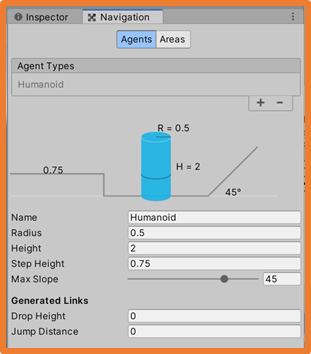
Se pueden crear tantos agentes como se quiera, por ejemplo, puede haber enemigos que no pueden saltar sobre un muro y otros que sí.
En la pestaña Areas se pueden definir las diferentes áreas y su prioridad (Cost),
a menor número mayor prioridad de pasar por esa área.
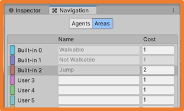
A los GameObjects que se deben mover se les debe añadir el componente NavMeshAgent .
En el ejemplo, la cápsula se moverá hasta la posición de la esfera por el camino más óptimo.
Se ha añadido el componente NavMeshAgent a la cápsula , en el inspector se puede ver las opciones de configuración que tiene.
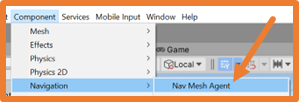
Ahora se debe añadir el componente NavMeshSurface sobre los GameObjects de la escena y asignarle el área que se quiera.
Este componente permite definir por dónde podrá moverse el agente .
En el ejemplo, el suelo y todos los bloques están dentro de un GameObject y en ese GameObject se añade el componente NavMeshSurface.
Una vez configurado el NavMeshSurface se debe pulsar la opción Bake .
Esta opción genera la superficie por la que el personaje se podrá mover.
Se puede observar que se deja un margen alrededor de los obstáculos para evitar comportamientos imprevistos.
Esta superficie se puede modificar cambiando los ajustes del Agent y pulsando Clear
y Bake de nuevo.
Como la esfera no es un elemento del escenario se le debe añadir el componente NavMeshObstacle .
El componente NavMeshObstacle se suele utilizar para los GameObject que pueden moverse por la escena.
El componente NavMeshObstacle se utiliza para personajes que se mueven por la escena y
para GameObjects que al moverse pueden afectar a la superficie de navegación.
Los enemigos tendrán el componente NavMeshObstacle y no deben afectar a la superficie de navegación.
GameObjects como piedras que pueden caer y entorpecer el paso o puertas
que pueden cerrarse sí que deben afectar a la superficie de navegación.
Para configurar un NavMeshObstacle y que afecte a la superficie debe marcarse la opción Carve,
si se quiere que solo afecte a la superficie cuando el GameObject se queda estático (por ejemplo una piedra grande que cae)
se debe desmarcar la opción Carve Only Stationary.
En el ejemplo, hay un cubo con el componente NavMeshObstacle y la opción Carve activada.
En la navegación se pueden crear enlaces.
Existen dos tipos de enlaces:
NavMeshLink : permite unir zonas de navegación de la misma superficie, por ejemplo, para permitir que el jugador baje un escalón más grande del permitido.
OffMeshLink : permite unir dos zonas de navegación separadas físicamente.
Los enlaces pueden ser unidireccionales o bidireccionales.
NavMeshLink
Un NavMeshLink tiene dos puntos y una superficie visible entre los dos puntos.
Si por ejemplo, se quiere que el personaje pueda bajar el escalón pero no pueda subirlo se debe desmarcar la opción Bidireccional .
OffMeshLink
Un OffMeshLink necesita dos GameObjects como referencia para la navegación.
En este punto solo falta asignar al GameObject que se debe mover (cápsula) el siguiente script.
Se debe añadir la librería en la parte superior del script.
A partir del script anterior se puede conseguir que un GameObject realice una ruta:
En la escena se deben crear GameObjects vacíos con un collider tipo trigger y situarlos donde se quiera.
En el script se debe declarar un array de objetivos.
En el método Start se indica que el primer objetivo sea la posición cero del array.
En el método Update se comprueba si se ha alcanzado el objetivo.
Si se ha alcanzado se actualiza el objetivo a la siguiente posición del array.
Si la siguiente posición del array es igual a longitud del array se actualiza el objetivo a la posición cero del array.
En el inspector se deben añadir todos los GameObject vacíos al script en el orden que se quiere que tenga la ruta de movimiento.
Si se quiere que el enemigo que realiza la ruta persiga al jugador se deben añadir los siguientes elementos:
En el script se debe declarar un Transform para el jugador.
Se debe añadir al funcionalidad de que se cree un Raycast desde el enemigo en la dirección en la que camina y con una longitud (se puede simular la vista humana haciendo que el Raycast gire algunos grados a cada lado).
Si el Raycast impacta en el jugador se guarda el objetivo actual en una variable y se cambia el objetivo por el transform del jugador.
Si el Raycast deja de impactar en el jugador (el jugador se aleja más que la longitud del rayop) se actualiza el objetivo por el objetivo guardado en el paso anterior (se puede mejorar actualizando el objetivo por el punto más cercano actual de la ruta del enemigo).
Si se quiere implementar que el personaje del jugador vaya al punto de la pantalla donde se realice clic, se puede utilizar el siguiente script:
Cambio de escenas
En un videojuego es habitual que haya más de una escena, principalmente porque cada nivel del juego suele ser una escena diferente.
Además, en los juegos también suele haber un menú inicial y un menú de opciones, que también son escenas.
Para poder cambiar a una escena, esta debe añadirse en las preferencias del build del juego.
Los cambios entre escenas se pueden realizar en diferentes momentos:
Al pulsar el botón Jugar en el menú principal.
Al superar un nivel.
Dentro de un nivel al entrar a una zona nueva.
...
El primer paso es añadir todas las escenas a las preferencias del build del juego:
File → Build Settings….
Pulsando el botón Add Open Scenes se añadirá la escena abierta.
Para añadir el resto de escenas se deben arrastrar desde el gestor de archivos.
La escena que esté en primera posición (0) será la que se cargue cuando se ejecute el juego (tras compilarlo y generar el ejecutable).
Para realizar el cambio de escena desde un script, en el script se debe añadir la librería en la parte superior del script.
La instrucción para cambiar de escena es la siguiente:
También se puede indicar el identificador de la escena (Build settings):
Al realizar un cambio de escena se puede indicar a los GameObjects que no se destruyan y se mantengan en la escena nueva.
Esto permite pasar datos entre escenas y ahorrar tiempo al estar ya los GameObjects cargados en memoria.
PlayerPrefs
Las PlayerPrefs permiten almacenar información en el ordenador donde se ejecute el juego.
Con las PlayerPrefs se suelen guardar:
El nombre del jugador.
Puntuaciones.
Vidas.
Opciones de juego como la resolución o teclas definidas por el usuario.
Último nivel (escena) jugado.
…
PlayerPrefs ofrece varios métodos para almacenar/recuperar información según el tipo de dato:
SetFloat
SetInt
SetString
GetFloat
GetInt
GetString
Los métodos Get pueden tener uno o dos parámetros,
el segundo será el valor por defecto para el caso en el que no exista la preferencia.
Para comprobar si una preferencia existe se usa el método HasKey :
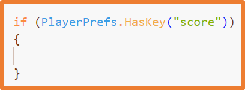
Para eliminar una preferencia se utiliza el método DeleteKey :
Para eliminar todas las preferencias se utiliza el método DeleteAll :
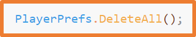
Menús
Para crear menús hay dos opciones:
Menú principal (cuando no existe ningún nivel cargado):
Suele crearse en una escena propia utilizando elementos de UI.
Menú ingame:
Puede crearse igual que el menú principal,
pero al cambiar de escena entre el nivel actual y el menú se deberá almacenar toda la situación actual.
Se puede crear dentro de la escena del nivel creando una cámara secundaria con los elementos de la UI.
Esta cámara estará lejos de los elementos del nivel.
Al acceder al menú se pondrán en pausa todos los elementos de la escena y
se cambiará la cámara activa para que sea la que tiene asociado el menú.
Aunque se puede crear un menú con GameObjects como si fuera una escena del juego,
lo más habitual es utilizar GameObjects de UI (Interfaz de Usuario).
El manejo de eventos en GameObjects de UI es diferente al del resto de GameObjects,
a continuación, se estudiarán los pasos a seguir para interactuar con ellos.
Cada tipo de GameObject de UI dispone de unos eventos que se pueden consultar en el inspector.
Estos eventos se deben enlazar con un método en un script de Unity.
Tras crear el script y añadir los métodos necesarios, que pueden tener el nombre que se quiera,
se debe añadir ese script al GameObject Canvas para poder seleccionar sus métodos posteriormente desde el inspector de los GameObject de UI.
Una vez añadido el script al Canvas,
para seleccionar un método desde un GameObject de UI se debe seleccionar el GameObject de UI y
en el inspector realizar las siguientes acciones:
Pulsar + en el evento que se quiera.
En el bloque que aparece, arrastrar el GameObject Canvas desde la jerarquía.
Seleccionar el método que se quiere que se ejecute al ejecutarse el evento.
De esta manera se enlaza el método con el evento en el GameObject de UI.